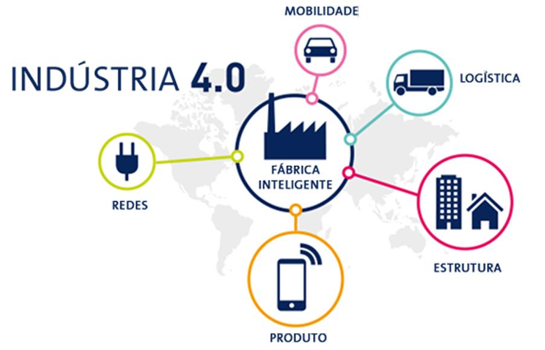

4ª Revolução Industrial
Seus impactos na saúde global
Jilcimar da Silva Fernandes
/
@jilcimarfernandes
Roteiro de apresentação
O que é a 4ª revolução Industrial
Impactos
Como vai beneficiar a saúde
Conclusão
o que é a 4ª revolução Industrial?
Onda de inovação e tecnologia;
Impacto na economia, sociedade e vida;
Criação de novos empregos/oportunidades;
Revolução, as pessoas tem medo de serem deixadas para trás.
"Mundo mais inteligente e mais conectado"
Impactos

Como vai beneficiar a saúde?
Sensores cada vez menores e mais conectados;
Algoritmos de predição/IA melhores;
Healt Analytics (Diferencial)
Monitoramento a distância (exemplo)
Digitalização do Hospital
Prontuário Eletrônico
Alguma dúvida?
Obrigado!